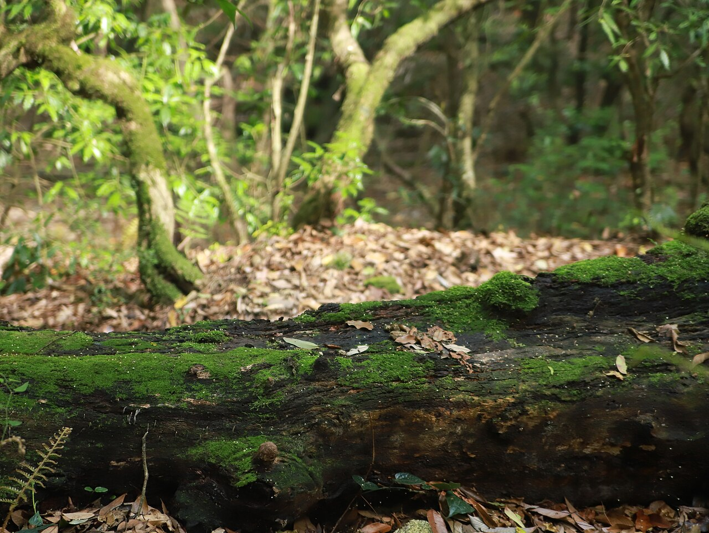

生态系统的物质循环
本期导读
碳循环 · 生物富集 · 碳中和

视频原话 · 导读3 句
- 同学们好！这节课梳理人教版选择性必修二第三章第三节——生态系统的物质循环。8.3s
- 高考常考碳循环图解的判断、生物富集、能量流动与物质循环的关系，以及土壤微生物分解作用的探究。10.0s
- 我们按七个考点梳理，每个考点都讲清楚怎么考、怎么做。5.6s
物质循环的概念01#
“物质” = 化学元素
“生态系统” = 生物圈
考法
特点：全球性、循环往复；农田等小生态系统要不断施肥，不能在自身内部完成物质循环
视频原话3 句
- 考点一，物质循环的概念。组成生物体的碳、氢、氧、氮、磷、硫等元素，都不断进行着从非生物环境到生物群落，又从生物群落到非生物环境的循环过程。15.5s
- 这里的“物质”指的是化学元素，不是化合物；这里的“生态系统”指的是生物圈。7.0s
- 考法：物质循环的特点是全球性和循环往复。一个小的生态系统，比如农田，需要不断施肥，并不能在自身内部完成物质循环。12.6s
碳循环的过程02#
群落 ↔ 非生物环境：CO2
易错
群落内部碳以含碳有机物形式沿食物链传递，不是以 CO2 形式
视频原话5 句
- 考点二，碳循环的过程。碳在非生物环境中主要以CO2和碳酸盐的形式存在。8.1s
- 碳在生物群落与非生物环境之间，主要以CO2的形式循环；在生物群落内部，以含碳有机物的形式传递。9.9s
- 碳进入生物群落，主要靠生产者的光合作用，还有化能合成作用。6.1s
- 碳返回非生物环境，靠动植物的呼吸作用、分解者的分解作用，以及化石燃料的燃烧。8.1s
- 易错：在生物群落内部，碳不是以CO2形式传递，而是以含碳有机物的形式沿食物链传递。9.2s
碳循环图解判断03#
① 找双向箭头：生产者与大气CO2库
② 其他成分都指向它：大气CO2库
③ 生产者、消费者都指向它：分解者；剩下的是消费者
解题方法
双向箭头定两者，箭头最多是大气，指向分解看遗体
试一试：用箭头规律逐个认出图解中的成分。
- 1碳循环图解中，两个成分之间存在双向箭头，它们是生产者与大气 CO₂ 库：光合作用吸收 CO₂、呼吸作用释放 CO₂，二者互为双向。
- 2图解中，箭头指向最多的那个成分是大气 CO₂ 库：各类生物的呼吸作用都向大气释放 CO₂，所以它接收的箭头最多。
- 3生产者和消费者的遗体、粪便都有箭头指向它分解者：分解者分解遗体、排遗物，所以要接收生产者和消费者的箭头。
- 4排除了生产者、大气 CO₂ 库和分解者之后，剩下的那个成分是消费者：四个成分逐个排除，最后剩下的就是消费者。
视频原话5 句
- 考点三，碳循环图解的判断。题目常把各成分换成字母，让你判断。7.1s
- 第一步，找双向箭头：双向箭头连接的两者，一个是生产者，一个是大气中的CO2库。8.8s
- 第二步，在这两者中，其他成分都有箭头指向它的是大气中的CO2库，另一个就是生产者。9.0s
- 第三步，除大气CO2库外，{生产者和消费者都有箭头指向它|brown}的，是分解者；剩下的是消费者。9.7s
- 解题方法：双向箭头定两者，箭头最多是大气，指向分解看遗体。图中 A 是生产者，B 是大气CO2库，C 是消费者，D 是分解者。14.2s
温室效应与碳中和04#
- 化石燃料燃烧、植被破坏
- →CO2浓度升高
- →温室效应加剧
- →全球变暖、海平面上升
减少排放：减少化石燃料燃烧，开发清洁能源
增加吸收：植树造林，保护植被
考法
2030 年前碳达峰、2060 年前碳中和；碳中和 = 一定时间内 CO2 排放量与吸收量相抵，净零排放
视频原话4 句
- 考点四，温室效应与碳中和。化石燃料的大量燃烧，以及森林等植被被破坏，使大气中的CO2浓度升高。10.8s
- CO2等温室气体增多，导致温室效应加剧，全球气候变暖，冰川融化、海平面上升。8.8s
- 缓解措施：减少化石燃料的燃烧，开发清洁能源；植树造林，增加CO2的吸收。8.5s
- 考法：我国提出力争2030年前实现碳达峰、2060年前实现碳中和。碳中和是指一定时间内，CO2的排放量与吸收量相抵，实现净零排放。15.6s
生物富集05#
吸收、积蓄难以降解的元素或化合物，使体内浓度超过环境浓度
重金属：铅、镉、汞
有机物：DDT、六六六
有机物：DDT、六六六
难以降解、不易排出 → 沿食物链逐级积累
考法
生物富集具有全球性（南极企鹅体内有 DDT）；可由浓度高低反推营养级
视频原话4 句
- 考点五，生物富集。生物体从周围环境吸收、积蓄某种元素或难以降解的化合物，使其在机体内浓度超过环境浓度的现象。12.3s
- 常见物质：铅、镉、汞等重金属，以及DDT、六六六等有机化合物。7.2s
- 这些物质在生物体内难以降解、不易排出，会沿食物链逐级积累，营养级越高，浓度越高。8.6s
- 考法：生物富集也具有全球性。比如从未使用过DDT的南极，企鹅体内也检测到了DDT。根据浓度高低，可以反推营养级的高低。13.2s
能量流动与物质循环06#
二者同时进行、相互依存、不可分割
| 比较项目 | 能量流动 | 物质循环 |
|---|---|---|
| 联系 | 能量是动力 | 物质是载体 |
| 特点 | 单向流动、逐级递减 | 循环往复 |
| 范围 | 生态系统各营养级 | 生物圈（全球性） |
易错
能量不能循环 → 生态系统需要不断输入能量；物质在生物圈范围内可以循环利用
视频原话4 句
- 考点六，能量流动与物质循环的关系。二者同时进行、相互依存、不可分割。7.9s
- 物质是能量的载体，能量沿着食物链流动，就储存在有机物中；能量是物质循环的动力。8.1s
- 区别：能量单向流动、逐级递减；物质循环往复、具有全球性。6.7s
- 易错：能量不能循环，所以生态系统需要不断输入能量，比如太阳能；而物质在生物圈范围内可以循环利用。10.2s
土壤微生物分解作用07#
案例一：落叶是在土壤微生物的作用下腐烂的吗？ 自变量：土壤微生物的有无
| 组别 | 土壤处理 | 落叶 |
|---|---|---|
| 实验组 | 60 ℃ 恒温箱处理 1 h（排除微生物，尽量不改变理化性质） | 腐烂慢 |
| 对照组 | 不做处理（自然状态） | 腐烂快 |
案例二：土壤微生物对淀粉的分解
| 组别 | 处理 | 加碘液 |
|---|---|---|
| A 组 | 土壤浸出液 + 淀粉糊 | 不变蓝 |
| B 组 | 蒸馏水 + 淀粉糊 | 变蓝 |
易错
被处理的是实验组，自然状态的是对照组；用 60 ℃ 而不高温灭菌，是为了不改变土壤理化性质
视频原话5 句
- 考点七，探究土壤微生物的分解作用。案例一：落叶是在土壤微生物的作用下腐烂的吗？8.6s
- 实验组：把土壤放在60 ℃恒温箱中处理1小时，尽可能排除土壤微生物的作用，又尽量不改变土壤的理化性质；对照组的土壤不做处理。13.2s
- 自变量是土壤微生物的有无，因变量是落叶的腐烂程度。5.4s
- 案例二：土壤浸出液加淀粉糊为 A 组，蒸馏水加淀粉糊为 B 组。一段时间后，A 组加碘液不变蓝，B 组变蓝，说明土壤微生物能分解淀粉。13.9s
- 易错：被处理的是实验组，自然状态的是对照组。60 ℃处理而不是高温灭菌，是为了避免土壤理化性质改变。11.1s
易错速查✓
先自己判断，再点按钮查看对错与解析。
- 1物质循环中的“物质”指化学元素说法正确。
- 2碳在生物群落内部以CO2形式传递说法错误：以含碳有机物的形式传递
- 3物质循环具有全球性说法正确。
- 4营养级越高，富集的有害物质浓度越低说法错误：营养级越高，浓度越高
- 5能量是物质循环的动力说法正确。
- 6对照组土壤要用60 ℃处理说法错误：实验组60 ℃处理，对照组不处理
双向箭头找生产者，营养级高富集多！
视频原话 · 易错速查5 句
- 最后，用六道判断题检验一下。3.6s
- 判断一：物质循环中的“物质”指化学元素？对。判断二：碳在生物群落内部以CO2形式传递？错，以含碳有机物形式。13.2s
- 判断三：物质循环具有全球性？对。判断四：营养级越高，富集的有害物质浓度越低？错，越高。11.2s
- 判断五：能量是物质循环的动力？对。判断六：对照组土壤要用60 ℃处理？错，处理的是实验组。11.3s
- 七个考点串成一条线：双向箭头找生产者，营养级高富集多。我们下期再见！8.0s
图片来源
图片来源：Wikimedia Commons —— Krishna k. sahh《Moss-covered decaying log on a forest floor》CC0
Photo: Krishna k. sahh, CC0